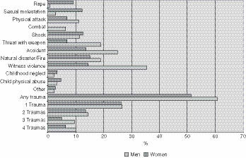
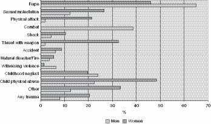
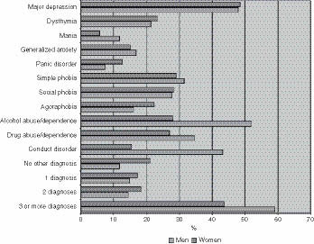

2
Complex PTSD
The Effects of Chronic Trauma and Victimization
In the 1980s and early 1990s, as the mental health community became aware of the high prevalence of childhood maltreatment in adult psychiatric patients, attention turned toward identifying the symptoms and problems related to childhood abuse. This focus of inquiry had two purposes: (1) if specific psychiatric syndromes were related to childhood abuse, then treatment would benefit from being trauma-informed, and (2) the presence of such syndromes might alert clinicians to a previously unknown history of trauma. However, the identification of specific sequelae to early trauma proved to be a difficult task. The nature and circumstances of past trauma differ considerably from person to person, and the problems related to childhood abuse are similarly diverse. Hundreds of studies published since the 1970s have shown that childhood traumatization—particularly sexual abuse—is correlated with a wide variety of psychiatric problems, including depression, anxiety, emotional lability, impaired self-esteem, relational difficulties, self-destructive behavior, alcohol and drug abuse, eating disorders, and various physiologic changes, among others (see, for example, Beitchman et al., 1992; Briere & Runtz, 1990; Browne & Finkelhor, 1986; Bryer et al., 1987; Fergusson, Horwood, & Lynskey, 1996; Gelinas, 1983; Greenwald, Leitenberg, Cado, & Tarran, 1990; Hall, Tice, Beresford, Wooley, & Hall, 1986; Herman, Russell, & Trocki, 1986; Mullen, Martin, Anderson, Romans, & Herbison, 1996; Pribor & Dinwiddie, 1992; Silverman, Reinherz, & Giaconia, 1996; Swett & Halpert, 1994). How does one sort through these myriad correlates of early abuse? Which are truly causally related? Many of these problems can derive from multiple etiologies, such as situational stress, genetic loading, or changes in brain chemistry in addition to early life experiences. So, what contribution does childhood traumatization play?
One way of understanding the hierarchy of responses to early trauma is to categorize psychiatric symptoms and syndromes as primary or secondary. Primary responses are direct effects of traumatization, and secondary responses are difficulties that develop as persons attempt to cope with the dysphoria of the primary effects. These latter kinds of responses are considered secondary (but not necessarily less important) because they are not directly caused by early abuse, but rather are the ways in which traumatized persons try to manage their distress.
Research findings and clinical observations strongly suggest that at least three major areas of psychological disturbance result directly from severe childhood trauma or the environment in which it occurs: posttraumatic stress disorder (PTSD), dissociative disorders (including dissociative identity disorder [DID] as the most severe form), and disruption of personality development and maturation such as is seen in borderline personality disorder. Posttraumatic symptoms or outright PTSD are logical consequences of childhood abuse. Adults with traumatic backgrounds often experience many different kinds of intrusive recollections of the abuse, as well as emotional numbing and attempts to avoid reminders of the abuse. Dissociation appears to be an available psychological defense for abused children whose limited coping capacities are overwhelmed by extremely traumatic events. Dissociation enables such events to be “forgotten,” or at least emotionally distanced. Many such traumatized individuals have ongoing dissociative symptoms or develop dissociative disorders persisting into adulthood. Finally, symptoms of borderline personality disorder—including ongoing relational disturbances, difficulty tolerating intense affects, impulsivity, and self-hate and emptiness—are consequences of the failures of attachment and the inadequate care and protection that are common in dysfunctional and abusive families.
This chapter discusses the manifestations of PTSD—including the syndrome of complex PTSD that results from severe and prolonged traumatization—and the various secondary responses to trauma. Dissociation and dysfunctional personality adaptations are each discussed in separate chapters that follow.
Many patients who have been severely abused in childhood suffer from the disabling triad of PTSD, dissociation, and borderline personality disorder. They commonly also have secondary symptomatology and diagnoses, as shown in Table 2.1. These persons are particularly vulnerable to various forms of substance abuse, using intoxication as a way to diminish or blunt the intensely dysphoric feelings that they experience—sometimes called the self-medication hypothesis for substance use disorders (Khantzian, 1997). Epidemiologic data in the general population has shown high lifetime prevalences for alcohol and drug use disorders among those who experience PTSD: for alcohol abuse, 52% of men and 28% of women; for drug abuse, 35% of men and 27% of women (Kessler, Sonnega, Bromet, Hughes, & Nelson, 1995). In clinical populations undergoing substance abuse treatment, the rate of co-occurring PTSD and substance use disorders has been estimated at 11% to 34%; in all female substance abuse populations, the rates are even higher, 30% to 59% (Najavits, Weiss, & Shaw, 1997). These data are mirrored by clinical experience; it is very common for survivors of childhood abuse to have a period—either current or past—when they used and ultimately abused alcohol and/or drugs. In some instances, the substance abuse was so effective in masking the trauma symptoms that evidence of PTSD only emerged after sobriety was attained.
Table 2.1 Adult Diagnoses Associated with Childhood Traumatization
| Primary Responses | |
| Posttraumatic Stress Disorder (PTSD) | Brewin, Andrews, & Valentine, 2000; Browne & Finkelhor, 1986; Coons, Cole, Pellow, & Milstein, 1990; Donaldson & Gardner, 1985; Schaaf & McCanne, 1998; Widom, 1999 |
| Dissociative Disorders | Boon & Draijer, 1993b; Pearson, 1997; Putnam, Guroff, Silberman, Barban, & Post, 1986; Ross et al., 1990 1
1 These studies provide correlations between childhood trauma and dissociative identity disorder. Discussion concerning correlations between trauma and dissociative symptoms can be found in Chapter 3, and a detailed discussion of dissociative amnesia is contained in Chapter 5. 2 Some somatoform symptoms such as somatoform dissociation and somatic memory may be primary responses, whereas others such as somatization and hypochondriasis are secondary responses. |
| Borderline Personality Disorder | G. R. Brown & Anderson, 1991; Herman, Perry, & van der Kolk, 1989; Ludolph et al., 1990; Ogata et al., 1990; Westen, Ludolph, Misle, Ruffins, & Block, 1990; Zanarini, Gunderson, & Marino, 1987 |
| Secondary Responses | |
| Substance Abuse Disorders | Fleming, Mullen, Sibthorpe, Attewell, & Bammer, 1998; Kendler et al., 2000; Langeland & Hartgers, 1998; Najavits, Weiss, & Shaw, 1997; Widom & Hiller-Sturmhöfel, 2001; Widom, Weiler, & Cottler, 1999; Wilsnack, Vogeltanz, Klassen, & Harris, 1997 |
| Eating Disorders | Connors & Morse, 1993; Everill & Waller, 1995; Folsom et al., 1993; Hastings & Kern, 1994; Herzog, Staley, Carmody, Robbins, & van der Kolk, 1993; Welch & Fairburn, 1996; Wonderlich et al., 1996; Zlotnick et al., 1996 |
| Somatoform Disorders2 | Barsky, Wool, Barnett, & Cleary, 1994; R. J. Brown, Schrag, & Trimble, 2005; Loewenstein, 1990; Pribor, Yutzy, Dean, & Wetzel, 1993; Roelofs, Keijsers, Hoogduin, Näring, & Moene, 2002; Spitzer, Barnow, Gau, Freyberger, & Grabe, 2008; Waldinger, Schulz, Barsky, & Ahern, 2006 |
| Obsessive Compulsive Disorder | Huppert et al., 2005; Lochner et al., 2002; Mathews, Kaur, & Stein, 2008 |
Survivors of childhood trauma frequently become involved in a variety of behaviors that have an addictive quality, including repetitive self-harm as a way of self-soothing, risk-taking behaviors, compulsive spending, and eating-disordered behaviors. In fact, in a significant minority of patients with eating disorders, childhood trauma seems to be a powerful contributor to their compulsive eating, fasting, exercising, and purging. As with many other psychiatric difficulties, eating disorders are a final common pathway deriving from numerous etiologies, including self-imposed perfectionism, overt or covert family conflict, or untreated affective disorders—in addition to trauma. However, when childhood trauma plays a critical role in the development of an eating disorder, the resultant difficulties may be more severe, complex, and difficult to treat. Treatment of patients with comorbid PTSD and eating disorders should optimally acknowledge both and incorporate elements of approaches for both problems.
Anorexia and bulimia nervosa are the types of disordered eating that commonly complicate and interfere with trauma treatment, and compulsive overeating—sometimes called binge eating disorder1—is also a frequent correlate for adults with a history of childhood trauma, particularly sexual abuse (Fairburn et al., 1998; Grilo & Masheb, 2001; Striegel-Moore, Dohm, Pike, Wilfley, & Fairburn, 2002). In clinical settings, compulsive overeating is described by patients as self-soothing or mood-regulating activity, and the resulting obesity can be a form of secondary gain in making the bodies of sexual abuse victims less attractive, hence alleviating their posttraumatic fears of sexual molestation. Although this type of disordered eating is less troubling in terms of trauma treatment, it is problematic in establishing healthy self-concepts and appropriate relationships, and in the deleterious long-term effects of morbid obesity.
As with eating disorders, there is a significant minority of patients with obsessive-compulsive disorder (OCD) where childhood trauma appears to play a major role in the etiology of their difficulties. There is an emerging consensus that most cases of OCD derive from changes in the neurobiology of brain functioning, with abnormalities in the functioning of central neurotransmitter systems involving serotonin and/or dopamine (for a review, see Pauls, Mundo, & Kennedy, 2002). However, there are some patients—primarily adolescents—whose OCD stems from early abuse, and the obsessional thinking and compulsive behavior have an addictive quality that appears to distract them from feelings and thoughts related to painful past traumatic experiences. There is little research data to document the incidence or significance of childhood trauma in OCD patients, but anecdotal clinical estimates are in the range of 10% to 20%.
Because some traumatized individuals develop and sustain dissociative symptoms to cope with their painful experiences, standard treatment for OCD may be less effective. For example, the cognitive-behavioral intervention of exposure therapy involves repetitively presenting patients with anxiety-producing material (e.g., contamination or forbidden thoughts) to decrease the intensity of their emotional reactions. Over time, the feared situations, substances, or ideas no longer result in anxiety, which reduces the need for obsessional thinking and compulsive behavior. However, if the OCD sufferer reflexively uses dissociation to avoid experiencing the feared exposures, the therapy is less effective. Hence, when OCD is linked to early abuse, treatment must be trauma-informed with particular care regarding the efficacy of specific protocols and interventions.
It has been interesting to observe how the addictive and avoidant behaviors of some childhood trauma survivors ebb and flow. For example, as some more serious behaviors abate with treatment, others are adopted in their place. Repetitive self-harming or risk-taking practices may give way to episodes of substance abuse, which in turn may abate only to be replaced by compulsive eating or spending. At McLean Hospital,2 my home institution, there are separate, specialized programs for trauma and dissociation, alcohol and drug abuse, eating disorders, and OCD. It is not unusual for some trauma patients, particularly adolescents, to cycle through these various programs as their treatments progress and their symptoms change. However, the primary underlying issue has to do with the traumatic antecedents of their difficulties.
Patients with histories of trauma exhibit a variety of somatoform disorders, or somatic expressions of psychological distress. Some manifestations are primary, direct results of the trauma such as conversion disorders, somatic reexperiencing, and stress-related physical symptoms (e.g., migraine headaches). Other symptoms are secondary effects, such as somatization disorder and hypochondriasis, through which trauma patients attempt to channel their distress by the experience of physical symptoms or becoming preoccupied with the possibility of physical disease. Conversion disorder was recategorized with the somatoform disorders in the DSM-III (APA, 1980) but has a long tradition of being understood as related to the dissociative disorders under the outdated rubric of “hysterical” disorders. In fact, the classic psychoanalytic understanding of hysteria involved physical symptoms such as local paralysis, pain, and anesthesia for which no organic cause could be found, which was termed conversion. The definition of hysteria was later extended to include psychological symptoms that resulted from underlying intrapsychic conflict, which was called dissociation.
Conversion disorder is still seen in traumatized persons (Roelofs et al., 2002), but it is relatively uncommon in most clinical settings. This may be an indication of the malleability of the so-called hysterical disorders to conform with socially acceptable norms. In the Victorian age, where mental illness was poorly understood and not widely accepted, it may have been more acceptable for traumatized persons to have physical symptoms rather than psychological difficulties. Such patients literally could not see, speak, or feel, mirroring their inability to acknowledge or communicate about their traumatic experiences.
Although conversion disorders are relatively rare in current psychiatric practice, bodily symptoms related to dissociation are common and frequently co-occur with symptoms of psychological dissociation (Nijenhuis, 2000; Waller et al., 2000). Dutch psychologist Ellert Nijenhuis, PhD (1999) has termed these physical symptoms “somatoform dissociation,” which includes many classic conversion symptoms. Somatoform dissociation includes symptoms of bodily dysfunction that have no organic basis, such as the inability to see or speak, alteration of sensory experience, pain, anesthesia, motor dysfunction and nonepileptic seizures. It is strongly associated with reported trauma among psychiatric patients. Somatoform dissociation presumably plays a defensive role—similar to psychological dissociation—in keeping traumatic experiences fragmented so that they are not perceived as overwhelming. In addition, some motor inhibitions and anesthesia/analgesia are somatoform dissociative symptoms that are similar to animal defensive reactions (e.g., freezing) to major threat and injury.
Somatic reexperiencing of traumatic experiences is commonly observed in clinical practice. The psychophysiologic responses to trauma—physical sensations, injury, and autonomic and neurohormonal adaptations—are held in an enduring way in the body (Rothschild, 2000; van der Kolk, 1994; van der Kolk & Van der Hart, 1991). The often used but somewhat controversial term body memories describes somatic reexperiencing of traumatic events, which can include physical sensations (e.g., focused pain) or actual physical manifestations (e.g., involuntary spasms). Although the term body memory is sometimes considered pseudo-scientific, these kinds of somatic memories are well-recognized and well-studied components of the implicit memory system, which includes all of the physical and emotional components of past experience. How else does one explain the physical sensations that are common when persons remember trauma that seem to mirror the actual events? For example, sexual abuse survivors can experience genital, anal, or throat pain, gagging, shortness of breath, and a sense of being crushed. Much less common are well-documented instances where stigmata of past injury appear, such as bruises during the recollection of a traumatic event, which then fade more quickly than would be possible for actual current injury.
In addition to the direct somatic effects of trauma, somatization disorder, pain disorder, and hypochondriasis (all as defined in the DSM-IV) are mechanisms through which traumatized patients experience their psychological distress as bodily symptoms or preoccupation with physical illness. Somatization disorder (also known as Briquet’s syndrome)—characterized by multiple physical complaints classically including pain, gastrointestinal, sexual, and neurologic symptoms that have no organic basis—has been linked to histories of early trauma and abuse (R. J. Brown et al., 2005; Pribor et al., 1993; Spitzer et al., 2008; Waldinger et al., 2006). Pain disorder—in which there is no underlying organic reason or the pain is vastly out of proportion to a medical condition—is often also related to childhood trauma (Sansone, Pole, Dakroub, & Butler, 2006), which is not surprising given that complaints of chronic pain are a common sequelae of early abuse (Teegen, 1999). Hypochondriasis—characterized by the persistent preoccupation that one has a serious disease despite the lack of evidence of such—has also been observed in populations of adults who have been traumatized in childhood (Barsky et al., 1994; Pribor & Dinwiddie, 1992).
The ongoing and pervasive effects of early trauma and abuse on the somatic experiences of survivors are quite clear. How to provide effective treatment to such individuals is less apparent. In the clinical arena, somatic dissociation and somatic memories may respond to standard treatments for PTSD and dissociative disorders and to specialized treatment focused on body-mind connections such as sensorimotor therapy (Ogden et al., 2006). However, patients with somatization disorder, pain disorder, or hypochondriasis are notoriously treatment-resistant, often having difficulty accepting the psychological roots of their distress. Perhaps this resistance is so marked because transforming emotional distress as physical illness allows patients to worry about something physical and concrete and spares them psychic pain. Most models of treatment for these disorders have focused primarily on patients in medical settings who have medical complaints unrelated to physical or biologic dysfunction (e.g., the “cardiac cripple” who is incapacitated by worry over insignificant sensations following recovery from a heart attack). There are few models of treatment for trauma patients in psychiatric settings. However, given the frequent presence of somatic aftereffects for patients with early abuse, this area of study should be of great interest and clinical importance in the future.
POSTTRAUMATIC STRESS DISORDER
Traumatization is part of the human experience. Whether by acts of nature or by acts of humans, catastrophic events can overwhelm human beings’ ability to cope and result in a variety of posttraumatic responses. If the traumatization is severe, prolonged, or occurs early in life, posttraumatic stress disorder (PTSD) and dissociative disorders are likely to develop. Exposure to traumatic events is extremely common in our society. The National Comorbidity Survey (NCS) was conducted in the early 1990s (Kessler et al., 1995) and sampled 5,877 adults in the general U.S. population for PTSD (Figure 2.1). Lifetime exposure to severe traumatic events was estimated at approximately 61% in men and 51% in women. The traumatic events included experiencing wartime combat, life-threatening accidents, natural disasters, physical assault, rape, sexual molestation, child abuse and neglect, being threatened with a weapon, being held captive, and other kinds of exposure to shocking or terrorizing events, or suffering great shock because one of these events happened to someone close to the person.
Figure 2.1 Lifetime Exposure to Traumatic Events by Type and Gender

Other studies have demonstrated similarly high levels of traumatic exposure in the general population (Breslau, Davis, Andreski, & Peterson, 1991; Resnick, Kilpatrick, Dansky, Saunders, & Best, 1993). However, not all shocking experiences—and perhaps not even most traumatic events—result in PTSD. The NCS determined a lifetime prevalence of PTSD at 7.8% (Kessler et al., 1995), much higher than previous estimates of around 1% (Davidson, Hughes, Blazer, & George, 1991; Helzer, Robins, & McEvoy, 1987), probably because of differences in diagnostic criteria and assessment procedures. The National Comorbidity Survey Replication (NCS-R; Kessler et al., 2005), conducted between 2001 and 2003, sampled 5,692 participants, using DSM-IV criteria. The NCS-R estimated the lifetime prevalence of PTSD among adult Americans to be 6.8%, a very similar figure to the first NCS.
The nature and severity of the traumatic events may influence whether prolonged psychological effects will occur. There were significant gender differences concerning the likelihood of developing PTSD for many different types of trauma (Figure 2.2). In the NCS, the types of trauma in men that were more likely to lead to PTSD included rape, combat exposure, childhood neglect, or childhood physical abuse; women were more likely to become symptomatic following sexual molestation, physical attack, being threatened with a weapon, or childhood physical abuse (Kessler et al., 1995).
Figure 2.2 Likelihood of Developing PTSD After Trauma Exposure by Type and Gender

The probabilities for developing PTSD were generally higher for life-threatening events than for those that were of lower impact. Of particular note was the finding that although men were more likely than women to be exposed to traumatic conditions, women were twice as likely as men to develop PTSD. This result might point to women’s increased vulnerability to develop PTSD, or more likely to the more severe sequelae of certain forms of traumatization, because women were overwhelmingly more likely than men to be the victims of rape or sexual molestation (odds ratio of 13 to 1).
Posttraumatic responses to brief or single overwhelming events in an otherwise intact person tend to be less severe and shorter-lasting. Many such experiences spontaneously resolve or become muted with time and encapsulated deep in the psyche, reappearing only in nightmares and under conditions of severe stress. However, the NCS found that more than one-third of people with an episode of PTSD failed to recover even after many years (Kessler et al., 1995). Persistent and disabling trauma-related responses are usually associated with those who have been exposed to particularly severe or chronic traumatization. The most severe forms of PTSD seem to result from certain types of prolonged childhood abuse, chronic combat experiences, or long-term domestic violence.
There are individual variations in response to stressful events. Some persons have more capacity to cope with trauma and greater resiliency to tolerate and recover from such experiences. Besides the type and severity of the traumatic experience, the reported risk factors for developing PTSD are preexisting psychiatric disorders, adverse childhood experiences, lack of social support, low socioeconomic status, lower intelligence, and family history of mental illness and/or substance abuse (Brewin et al., 2000; Davidson & Fairbank, 1993; Green, 1994; Ozer, Best, Lipsey, & Weiss, 2003). Trauma research has not yet sufficiently explored populations that have been exposed to trauma and do not develop posttraumatic difficulties. An emerging area of study in psychology has looked at resilience to loss and trauma and has begun to identify the characteristics of individuals who seem to fare better under adverse circumstances (Bonanno, 2004). A personality trait that has been called “hardiness”—which includes the beliefs that life is meaningful, that one can have control over the outcome of events, and that one can learn and grow from life experiences (Kobasa, Maddi, & Kahn, 1982)—has been linked to resiliency to trauma. However, many patients with severe and disabling posttraumatic responses have histories of extreme trauma such as malignant childhood abuse. Such experiences interfere with the development of healthy resilience, such as the characteristics of hardiness, and it is difficult to imagine that experiences of this sort would be well tolerated by any individual regardless of coping capacity.
The DSM-IV has the following criteria for PTSD (APA, 1994, pp. 427–428):
Criterion A: Stressor
The person has been exposed to a traumatic event in which both of the following have been present:
1. The person has experienced, witnessed, or been confronted with an event or events that involve actual or threatened death or serious injury, or a threat to the physical integrity of oneself or others.
2. The person’s response involved intense fear, helplessness, or horror. Note: In children, it may be expressed instead by disorganized or agitated behavior.
Criterion B: Intrusive Symptoms
The traumatic event is persistently reexperienced in at least one of the following ways:
1. Recurrent and intrusive distressing recollections of the event, including images, thoughts, or perceptions. Note: In young children, repetitive play may occur in which themes or aspects of the trauma are expressed.
2. Recurrent distressing dreams of the event. Note: In children, there may be frightening dreams without recognizable content.
3. Acting or feeling as if the traumatic event were recurring (includes a sense of reliving the experience, illusions, hallucinations, and dissociative flashback episodes, including those that occur upon awakening or when intoxicated). Note: In children, trauma-specific reenactment may occur.
4. Intense psychological distress at exposure to internal or external cues that symbolize or resemble an aspect of the traumatic event.
5. Physiologic reactivity upon exposure to internal or external cues that symbolize or resemble an aspect of the traumatic event.
Criterion C: Avoidant/Numbing Symptoms
Persistent avoidance of stimuli associated with the trauma and numbing of general responsiveness (not present before the trauma), as indicated by at least three of the following:
1. Efforts to avoid thoughts, feelings, or conversations associated with the trauma
2. Efforts to avoid activities, places, or people that arouse recollections of the trauma
3. Inability to recall an important aspect of the trauma
4. Markedly diminished interest or participation in significant activities
5. Feeling of detachment or estrangement from others
6. Restricted range of affect (e.g., unable to have loving feelings)
7. Sense of foreshortened future (e.g., does not expect to have a career, marriage, children, or a normal life span)
Criterion D: Autonomic Hyperarousal
Persistent symptoms of increasing arousal (not present before the trauma), indicated by at least two of the following:
1. Difficulty falling or staying asleep
2. Irritability or outbursts of anger
3. Difficulty concentrating
4. Hypervigilance
5. Exaggerated startle response
In addition, the DSM-IV requires that the PTSD symptoms be present for more than one month (similar symptoms for less than a month are diagnosed as acute stress disorder). PTSD is considered to be chronic if the symptoms are present for more than three months. The DSM-IV describes the occurrence of delayed onset, in which symptoms emerge more than six months after the event. One variant of delayed onset occurs in conjunction with complete or partial amnesia for traumatic events. When the memory is recovered—often years later—acute PTSD symptoms erupt, often with vivid, detailed intrusive memories and flashbacks along with severe autonomic hyperarousal, as though a defensive barrier has been breached. In retrospect, some of these persons with delayed recall realize that they had been in a somewhat chronic, numbed state before the return of the memories.
DIFFERENTIAL DIAGNOSIS
From a treatment perspective, it is important to correctly diagnose patients’ difficulties and to understand the etiology of their symptoms. For example, although many traumatized persons meet the DSM-IV criteria for a major depressive disorder, it is more helpful to recognize the symptoms as being trauma related: depressed and anxious mood (related to PTSD and borderline personality), emotional constriction and numbing (related to PTSD and dissociation), social withdrawal (related to PTSD and borderline personality), hopelessness and a sense of foreshortened future (related to PTSD), helplessness (related to PTSD and borderline personality), and self-destructive thoughts and behaviors (related to PTSD and borderline personality). If the symptomatology is truly trauma-related, patients will not optimally respond to treatments for major depression such as antidepressant medication. In our study comparing patients with childhood trauma to nontraumatized patients with major depression (Chu, Dill, & Murphy, 2000), both groups met DSM-III criteria for major depressive disorder and had many classic neurovegetative signs and symptoms of depression, including loss of energy, interest, and motivation, sleep and appetite disturbance, guilt, and suicidal thoughts. The only symptoms that seemed to differentiate the two groups had to do with the characteristics of the sleep disturbance. The depressed group endorsed difficulties in falling asleep despite feeling tired, and midsleep awakening with the inability to fall back to sleep. The patients with trauma had difficulty falling asleep because they were too anxious or fearful to sleep, and they subsequently woke up multiple times during the night with anxiety that was sometimes caused by traumatic nightmares.
Given the distressingly high prevalence of trauma, it is not unusual for some patients to have true comorbidity in addition to trauma-related syndromes. That is, traumatized patients may have major mood and anxiety disorders, schizophrenia and other psychotic illnesses, dementia, delirium, or organic states. In these situations, it is usually imperative to treat the non-trauma-related difficulties as the first priority. Serious psychiatric illness is a major internal stress on the body and mind, and because posttraumatic and dissociative symptoms are stress-responsive, these trauma-related symptoms may be heightened by untreated comorbid disorders, as in the following example:
Esther, a 63-year-old, single woman was admitted to a psychiatric hospital with florid PTSD symptoms. She had intrusive thoughts almost continuously about known physical and sexual abuse that had occurred after she was abandoned as a child and raised in a series of foster homes and institutions. She was particularly fearful at night, having flashbacks and seeing images of menacing men outside her window. A closer examination of her symptoms suggested that Esther was suffering from major depression with psychotic features. She showed extreme psychomotor retardation, barely moving from her bed or chair, had sustained a recent 20-pound weight loss, and spoke of feeling that her “insides” were decaying. A brief course of electroconvulsive treatment followed by medication brought about a remarkable change. She recompensated with improvement in both her mood and PTSD symptoms. Although she still thought about her early abuse, the thoughts did not overly disturb her, and she was able to return to her previous level of functioning.
It is also not unusual for certain psychotic disorders to mimic trauma-related syndromes, as in this clinical illustration:
A 24-year-old man was referred for evaluation for PTSD. He had recently had several episodes where he had the abrupt onset of episodes of intense anger, agitation, and anxiety, which he attributed to possible sexual abuse by an older family member such as his father, uncle, cousin, or older brothers. When asked if he had memories of the abuse, he admitted that he had no such recollections and had never previously suspected abuse, but he felt that this was the only explanation for these episodes. He was preoccupied with fantasies of avenging himself for having been molested, but he was unclear which family members might have abused him.
It became clear that he also had vague but intense worries about other issues, such as the idea that he might have been sexually abused by a priest in his church (without any memory or indication of such) and that he might be homosexual (despite all evidence pointing to heterosexual orientation). He reported a sense of emptiness and a sense of detachment from others (including parents who he described as caring and supportive) and difficulties functioning; these problems had been increasing since his midteen years. In addition to his apparent paranoia, he admitted that his thinking was often extremely scattered, disorganized, and confused. In consultation with his treating psychiatrist, it was clear that the diagnosis of PTSD was unlikely and that schizophrenia or another psychotic illness was more probable.
COMPLEX PTSD
In several ways, it is not entirely helpful to accept the criteria for PTSD as defined in the DSM-IV as fully describing the aftereffects of trauma. First, PTSD rarely exists in isolation. More often, particularly in cases that become chronic (i.e., symptoms persist for more than three months), extensive comorbid conditions complicate treatment and recovery. Second, the DSM-IV diagnostic criteria are very limited and do not include some important changes that occur universally in PTSD, such as fundamental shifts in the way that trauma survivors see themselves and the world. In order for the concept of PTSD to be most useful, one must consider how it customarily presents in real-world situations and how to optimally understand and treat the multiple difficulties that PTSD sufferers experience. It is also important to understand the limitations of treatment outcome research. In order to have clean participant samples that will eliminate unnecessary variables, researchers generally exclude those patients with extensive comorbidities. Hence, some research findings concerning efficacy of treatment have only limited applicability and may not be relevant to many PTSD patients seen in clinical practice.
It is striking to note how commonly PTSD patients have multiple comorbidities (Figure 2.3). In the NCS, the vast majority of participants who had PTSD at any point in their lifetime qualified for at least one other diagnosis during their lifetime; approximately half qualified for more than three diagnoses (Kessler et al., 1995).
Figure 2.3 Lifetime Prevalence of Comorbid Disorders in Respondents with Lifetime PTSD

Part of the comorbidity found with PTSD results from the overlap in symptom criteria with other disorders, which is why many have referred to the umbrella of PTSD. As noted previously, some of the avoidant/numbing symptoms of PTSD may resemble symptoms of depression, and some of the autonomic hyperactivity, such as irritability, hypervigilance, and startle response, may overlap with anxiety disorder symptoms. Even so, it is clear that many, if not most, PTSD sufferers have many areas of psychiatric difficulties in terms of diverse symptoms and disabilities.
Much of the comorbidity of some PTSD derives from the effects of chronic trauma, which have only been recently understood. Psychiatrist Lenore Terr, MD, began studying the effects of trauma on children in the 1970s and published groundbreaking accounts that have helped to elucidate the differential effects of acute and chronic traumatization. Terr’s best-known work concerns her investigation of the aftereffects of the kidnapping of 26 children in the small California town of Chowchilla in the summer of 1976 (Terr, 1979, 1980, 1983, 1990). The children were abducted from a school bus, packed into two vans and driven around for 11 hours, and then held captive in a buried moving van. They managed to escape from their underground prison late on the following day. In the flurry of police activity and media attention, little thought was given to the children’s psychological experience or mental health concerns. The effects of psychic trauma on children were virtually unknown at the time; a local child psychiatrist predicted that perhaps only one child would develop psychiatric problems. In fact, all of the children showed striking evidence of residual terror, rage, helplessness, and a sense of vulnerability in psychological symptoms (nightmares, premonitions, magical thinking), behavioral reenactments (trauma-related play), and medical symptoms for years after the event. Terr went on to study many other individual children and cohorts of traumatized children, and she began to recognize the varying aftereffects of trauma that depended on the nature of the stressor, the individual characteristics of the children involved, and whether the trauma was a “single blow” or more chronic in nature.
There are differential effects of acute and chronic trauma. In a remarkable summary paper in the American Journal of Psychiatry, Terr (1991) observed the following about the effects of acute traumatization:
The findings special to single, shocking, intense terrors are 1) full, detailed, etched-in memories, 2) “omens” (retrospective reworkings, cognitive reappraisals, reasons and turning points), and 3) misperceptions and mistimings.… Verbal recollections of single shocks in an otherwise trauma-free childhood are delivered in an amazingly clear and detailed fashion. A few details from a traumatic event of childhood may be factually wrong because the child initially misperceived or mistimed the sequence of what happened. But children… seem to remember the event and to give impressively clear, detailed accounts of their experiences. This remarkable retrieval of full, precise, verbal memories of almost all single blow traumas makes one conclude that these memories stay alive in a very special way. (p. 14)
In this passage, Terr describes the increased clarity of recall (hypermnesia) that results from brief or limited traumatization. The details of the experience are remembered clearly, although there may be some errors caused by misperception and about the sequence of events. The “omens” that Terr referred to are probably more commonly understood as the kind of magical thinking that children often employ to make sense out of events that are overwhelming or out of their control. For example, in the aftermath of the Chowchilla kidnapping, one girl decided to never again wear a blue dress, and another girl resolved to not argue with her mother, both circumstances having occurred on the morning before the kidnapping.
While Terr’s investigations concerned children, her conclusions have proved to have applicability to adults as well. Single traumatic events at all ages are generally well remembered, although peripheral details are sometimes misremembered. Adults are also prone to a kind of magical thinking in an effort to gain a sense of control over overwhelming events. For example, in the aftermath of the terrorist attacks of September 11, 2001, many Americans foreswore traveling by airplanes, and Homeland Security officials advised citizens to stock up on plastic sheeting and duct tape to protect themselves against possible chemical or biological attack, even though such measures would be unlikely to ensure their safety.
In contrast to the aftereffects of acute, “single blow” traumas, there are markedly different sequelae in children who are subjected to long-standing trauma. In her 1991 paper, Terr wrote:
The defenses and coping operations used in the [disorders resulting from chronic traumatization in] childhood [include] massive denial, repression, dissociation, self-anesthesia, self-hypnosis, identification with the aggressor, and aggression turned towards the self, [and] … profound character changes. … Children who experience [chronic] traumas often forget. They may forget whole segments of childhood—from birth to age 9 for instance …” Where one sees the difference between these “forgetful” children and ordinary youngsters is in the multiply traumatized child’s relative indifference to pain, lack of empathy, failure to define or acknowledge feelings and absolute avoidance of psychological intimacy. Repeatedly brutalized, benumbed children employ massive denial. (pp. 15–16)
In this brief passage, Terr described some of the multiple domains of dysfunction that eventually have become acknowledged as integral parts of complex PTSD. The elements of “denial, repression, dissociation, self-anesthesia, self-hypnosis” are all automatic psychological defenses to distance oneself from the overwhelming emotions and sensations of traumatic experiences. The massive forgetting serves the need to disavow and block recall of trauma. The extent of the global amnesia—for all memories, not just the traumatic ones—suggests that other mechanisms are involved rather than just blocking out distressing events. Finally, Terr notes that chronic childhood trauma alters normal personality development, resulting in profound character changes with “identification with the aggressor, and aggression turned towards the self,” “indifference to pain, lack of empathy, failure to define or acknowledge feelings and absolute avoidance of psychological intimacy”—all of which are the building blocks for the development of the characterologic pathology found in borderline personality disorder.
The concept of complex PTSD was originally described by Herman (1992a, 1992b) and includes many features that are commonly seen in individuals who have been subjected to severe and persistent traumatization. In Herman’s conceptualization of complex PTSD, the individual is harmed by being held in a state of captivity, under the control of a perpetrator of abuse, and unable to escape. Such conditions are found in situations where human rights are sometimes grossly violated, such as concentration camps, prisoner of war camps, and prisons, but captivity and long-term traumatization can also occur in ongoing domestic violence and in the form of severe and chronic childhood abuse.
The concept of complex PTSD has also been termed “disorders of extreme stress, not otherwise specified” (DESNOS) and was further elaborated by van der Kolk and his colleagues (van der Kolk et al., 1996; van der Kolk, Roth, Pelcovitz, Sunday, & Spinazzola, 2005). It has been assessed using both standard and newly developed instruments (Briere & Spinazzola, 2005; Luxenberg, Spinazzola, & van der Kolk, 2001; Pelcovitz et al., 1997), and validated in DSM-IV field trials (Roth, Newman, Pelcovitz, van der Kolk, & Mandel, 1997; van der Kolk, 2002). In complex PTSD and DESNOS, changes and harm occurs in fundamental alterations in multiple domains of psychological functioning:
- Alterations in emotional regulation and impulse control, such as persistent sadness, explosive or inhibited anger, self-destructive thoughts and behavior, suicidal preoccupation, and risk-taking behaviors
- Alterations in consciousness, such as forgetting or reliving traumatic events, or having episodes in which one feels detached from one’s mental processes or body
- Alterations in self-perceptions, such as helplessness, defectiveness, shame, guilt, stigma, or a sense of being different than others
- Alterations in perceptions of the perpetrator, such as attributing total power to the perpetrator or becoming preoccupied with the relationship to the perpetrator including revenge fantasies
- Alterations in relations with others, such as isolation, distrust, being revictimized, victimizing others, or searching for a rescuer
- Alterations in somatic experience, such as chronic pain, conversion, or cardiac, gastrointestinal, neurologic, or sexual symptoms
- Alterations in one’s system of meanings, such as a loss of sustaining faith, or a sense of hopelessness and despair
Translated into DSM concepts and language, the syndrome of complex PTSD acknowledges that long-term traumatization has profound effects in many areas resulting in PTSD symptoms, dissociation, and abuse-related personality disturbances—the primary triad of the direct responses to trauma that is so often seen in clinical settings—plus somatic symptoms and psychological responses. Persons with complex PTSD have the classic posttraumatic intrusive symptoms of recurring thoughts, dreams and flashbacks, numbing symptoms of emotional constriction and social isolation, and autonomic overactivation manifested by chronic anxiety, irritability, and startle responses. In addition, the alteration in the way that they view themselves and the world profoundly affects the way that they function and interact with the others. Seeing themselves as defective and vulnerable, but also feeling empty and alone, they approach others with profound mistrust but also sometimes seek a caretaker or rescuer. Sufferers from complex PTSD are frequently overwhelmed with intense feelings, such as deep sadness, suicidal thoughts, explosive or bottled-up anger, aloneness, shame, guilt, hopelessness, and despair. Unable to tolerate such intense affects, they may resort to a variety of dysfunctional behaviors, such as self-destructive acts, repetitive self-injury as a form of tension release, risk taking, and substance abuse.
Severely traumatized patients commonly present with a bewildering range of psychiatric symptomatology and represent diagnostic and treatment challenges. It is understandably difficult to know how to approach patients who manifest such a complex array of symptoms. Perhaps it is because of this complexity of symptoms that these patients are often difficult to treat, and the treatment process is often long, confusing, and complex. Clinical examples best demonstrate how various trauma-related difficulties can present in clinical settings and how clinicians can come to understand them and provide helpful and focused treatment. The following extended clinical vignette of a patient, “Donna,” illustrates the mixture of posttraumatic, dissociative, and characterologic features along with extensive comorbidities that can be perplexing to most clinicians. I met Donna on my first day at McLean Hospital and eventually became her psychiatrist and therapist and worked with her for many years. She had already been a patient at McLean for some time when I met her and was well-known—in fact, somewhat notorious—to most of the staff of various inpatient units.
DONNA’S STORY
Donna was first hospitalized when she was 26 years old. She was a college graduate who was working as a teacher’s aide. She was unmarried with few friends and had few social interactions other than intermittent contact with a younger brother. She was admitted following a very serious suicide attempt, and she remained hospitalized for more than four months because of unremitting, driven suicidality. Despite the attempts of hospital staff to keep her from harming herself, she ingested overdoses of saved-up medication, mutilated her arms and throat with a stolen metal fork, and attempted to strangle herself with a latex glove. Given her repeated attempts to harm herself and her difficulties engaging productively with hospital staff, she was regarded with anxiety, frustration, and suspicion.
When calm, Donna was a pleasant-looking, somewhat overweight young woman who could be disarmingly direct, humorous, and quite engaging. However, she could also be angry and demanding. Donna felt very demeaned by the necessary safety precautions and the restrictiveness of her treatment that allowed her very little privacy and limited personal freedom. She felt very abused by the hospital staff and did not hesitate to tell them so. She berated them for being cruel, insensitive, and incompetent. Repeatedly, she demanded more privileges and accused the staff of intentionally punishing and hurting her. Donna’s treatment team tried to be reasonable, and on one occasion when she seemed to be a bit calmer and less overtly destructive, she was allowed the privilege of going out on grounds with a group of patients and a staff member. She proved unable to maintain the responsibility for this very limited privilege. She eloped from the group, ran off the hospital grounds, bought razor blades, and cut her arms severely in the bathroom of a local bus depot. After being discovered, she was brought back to the hospital, and the cycle of misery and mutual mistrust continued. After an extended period of hospitalization, Donna’s self-destructiveness seemed to abate, and she was eventually discharged to a halfway house for psychiatric rehabilitation. However, conflicts over her safety soon erupted, and she was asked to leave the halfway house for violating rules around the use of alcohol. She went to another residence and made arrangements to return to work.
Donna did have some difficulties at work with serious control struggles with her supervisors, as well as problems with absenteeism. When she didn’t feel well, which could occur one or two days every two weeks or so, she would not go to work, and that created a serious problem in terms of her reliability. She was also the victim (as she predicted) of prejudice when it became known that she had psychiatric problems. At times she was treated as though she really didn’t have any problems and was only trying to get out of working when she called in sick. At other times she was labeled as unstable and incompetent even in situations that would have been stressful to anyone. Donna’s behavior varied wildly. She was sometimes able to work competently but at other times seemed so distraught, helpless, and childlike that she was unable even to care for herself. This variability of behavior was very confusing to those who were attempting to treat her. Some believed that she was “just regressed” and was capable of pulling herself together and that she just wasn’t trying, whereas others felt that she had little or no control over herself.
Donna’s treatment remained problematic. Very few approaches seemed helpful in any kind of sustained way. She was treated with every therapeutic modality in common use. She received intensive individual psychotherapy with me. I prescribed numerous medications, including powerful antidepressants and antipsychotics. She participated in group treatment. Nothing appeared to help. Not only was she despondent and suicidal, but she often became panicked and agitated. She complained of hearing voices inside her head that told her to kill herself and of seeing frightening images of threatening figures at night. She would often try to harm herself when she was distressed, cutting or scratching deep wounds on her forearms or other parts of her body. Periodically, new symptoms appeared, including episodes of seizure-like spasms where she would appear to lose consciousness and convulse on the ground.
Donna remained seriously suicidal. She would frequently present to me looking quite withdrawn, depressed, and distressed. When I asked what was troubling her, she would only respond somewhat incoherently, “I don’t feel like myself …” Attempts to draw her out further were largely futile. She would sometimes mutter or become mute, looking around the room apparently quite frightened, mouthing inaudible words. This behavior would usually escalate into her becoming more upset and agitated, even to the extent of running from the room or trying to hurt herself in some way.
Hospitalization was frequently required, and these admissions continued to be chaotic. Donna would often be agitated and self-destructive, banging on walls with her hands and head and attempting to elope from the unit whenever the door was opened. Some of these agitated episodes could only be contained by putting her into physical restraints, and her cries for help and her piteous sobbing during restraint periods were heartbreaking. Staff members were deeply frustrated by their inability to help Donna. Some continued to feel sympathetic toward her. Others, particularly those who bore the brunt of her articulate verbal (and occasionally physical) attacks, were clearly hostile to her, interpreting her behavior as solely manipulative and attention-seeking. Of particular note was Donna’s response after being restrained. She would gradually quiet down and then, often two or three hours later, she would appear to wake up and, in a childlike way, ask the nurse observing her, “What happened?” This response would generally outrage many of the staff who were often convinced that Donna was perfectly aware of what she was doing and should be more honest and cooperative.
For the first several years of her treatment, Donna continued to do poorly. Repeated crises of various sorts occurred, many of which resulted in hospitalizations. Even during better periods of outpatient treatment, the unexpected often occurred. On some occasions, Donna would seem to be well grounded and able to discuss her current life situations with increasing insight and more of a sense of trust in her treatment team. At other times, Donna was much less coherent and engaged. She was frequently suicidal, and sometimes her treatment was only focused on attempts to contain her self-destructive impulses and to have her agree to not kill herself—at least until the next appointment. Despite continued therapy and changes in medication, she was sometimes mute, seeming to respond to frightening internal experiences.
Emergency situations were frequent. On several occasions, medical treatment for drug overdoses was necessary. Sometimes Donna would call me for help in a crisis. At other times, she would hurt herself without calling. Her forearms were the sites of multiple self-inflicted lacerations, which sometimes led to serious cellulitis (infection of the skin and subcutaneous tissues with fever, swelling, inflammation, and pain). She claimed to experience no pain when cutting herself, only relief, and she stubbornly resisted any suggestions that she stop this self-mutilation. On several occasions, Donna was at risk for death by drug overdose or for serious medical complications such as the amputation of an arm because of cellulitis.
Donna’s treatment finally changed during a particular hospitalization. A perceptive nurse approached me to tell me about certain very striking behaviors she had observed when Donna was placed in restraints, which made the nurse question a history of childhood abuse. Specifically, she would often cower in a corner and put her hands over her head as if fending off attack and then seemingly react as if she were being beaten. This was a light-bulb moment for me, and the observation shifted my understanding of Donna’s difficulties as perhaps being trauma-related. For example, her sense of detached spaciness was consistent with depersonalization and derealization (distortions of her perceptions in which the world around her and her body seemed unreal or detached). Her waking up after being in restraints or following a pseudo-seizure could be flashbacks with subsequent amnesia and some kind of somatization. And her ability to abruptly switch from suicidal patient to competent teacher’s aide could be interpreted as some kind of switching between self-states. Even more clearly, perhaps some of her hallucinations and intense psychological distress, as well as her stereotyped behavior while being restrained, could be understood as manifestations of reexperiencing of past traumatic events.
Donna had previously been able to report only very general information about her childhood, saying that her father was intimidating and her mother was difficult. Further inquiry revealed that Donna had only fragments of memory for events before the age of 12. She had recall of a few specific incidents, but she remembered almost nothing about such things as routine home life, the house she grew up in, friends, teachers, school, or other early childhood experiences. All she remembered clearly were her adolescent and adult years: details about high school and college, her struggle to leave home against her mother’s wishes, her parents’ divorce, and then the numbing depression and desperate wishes to kill herself that led her to seek psychiatric treatment. Donna had no memory of overt physical or sexual childhood abuse. She was able to describe a chaotic family with a father who was alcoholic and threatening at times. Her mother appeared to have been chronically overwhelmed and sometimes suicidal, often relying on Donna for comfort and support.
During this period, Donna continued to have terrible symptoms. She began to have nightmares, often waking her roommates with screams of terror. She began to have vivid memories of both being the victim and witness of abuse. She recalled details of how her parents were constantly battling, describing physical assaults between her parents, some of which appeared to be attempts to injure or kill each other. During the course of a hospitalization, she began to have acute reexperiences of a series of physical assaults that had occurred between the ages of 5 and 12. She believed that on multiple occasions when she was left alone with her father that he would become drunk and violent, repeatedly assaulting her.
Therapy became acutely painful for Donna as she felt tortured in her body and mind by her memories and flashbacks of her childhood abuse. The psychological toll was devastating as she spent several months coming to terms with her past. The breakthrough of traumatic memories overcame her brittle defenses of denial and dissociation. She could no longer block out past events; they invaded day and night in intrusive thoughts and nightmares. She could no longer switch into a functional teacher’s aide and had to take a leave of absence from her job. In retrospect, the exploration of Donna’s childhood abuse was far too rapid and intense, resulting in serious impairment of her functioning. Even so, the previous years of her treatment had resulted in the slow abatement of her mistrust of others and her learning to control destructive impulses and to tolerate intense feelings, and this progress made it possible for the regression to last only a few months.
The ultimate validation of usefulness of understanding the role of trauma in Donna’s life was that she actually got better. Several months after the first memory, she was actually asymptomatic for the first time in her life. She was not particularly depressed nor anxious, and she was modestly hopeful about her future. The pseudo-seizures vanished and the nightmares abated. Even more remarkably, she was no longer hated. A new person—warm, compassionate, and funny—began to emerge from behind the mask of fear, defensiveness, and self-hate. Her relationships with others dramatically improved. She continued to have some intermittent crises, but hospitalizations became much less frequent. Her relationship with staff members during these hospitalizations was dramatically different, with virtually all staff members being able to sympathize with her struggles to improve and feeling pleased to be able to help her to do so.
Donna eventually returned to work and tried to create a semblance of a normal life. More than ever before, she was successful. She was able to maintain her own apartment and live by herself. She was increasingly able to make and keep friends and enlarged her network of friends and acquaintances. At age 35 she had a boyfriend for more than a year. However, her life was not trouble-free. There were periods where she was devastated by additional unexpected recollections, and she continued to struggle with episodes of depression. Far from being the end of treatment, the recovery of her past was only the beginning of the rebuilding of her life and her reengaging with the world. She faced the need to examine her fundamental assumptions about the world and herself, and to confront the sense of helplessness and hopelessness that still interfered with her ability to function. Nonetheless, she was able to proceed with the journey from feelings of self-hatred to self-worth, from helplessness to self-empowerment, from despondency to hope. Donna emerged from the nightmare of her struggles with true dignity and the depth of character that only true adversity can forge.
1 Binge eating disorder—compulsive binge eating without purging—is categorized under “eating disorders, not otherwise specified” in the DSM-IV.
2 McLean Hospital is a private, nonprofit psychiatric hospital in Belmont, Massachusetts. It is an affiliate of the Massachusetts General Hospital and the largest psychiatric teaching affiliate of Harvard Medical School.